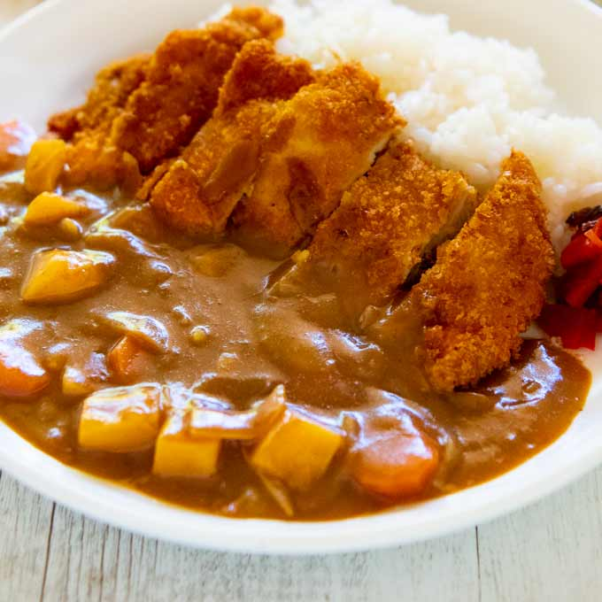

Home
Katsu Curry

Description
Katsu Curry is a beloved Japanese dish that combines the crispy texture of breaded and deep-fried cutlets with the rich, savory flavors of Japanese curry. Typically made with pork (tonkatsu) or chicken (chicken katsu), the cutlet is coated in panko breadcrumbs, fried to golden perfection, and served alongside a thick, mildly spiced curry sauce. The curry itself is made from a roux-based blend of curry powder, onions, carrots, and potatoes, resulting in a smooth and slightly sweet sauce that complements the crunchy cutlet. This dish is often served with steamed white rice and garnished with fukujinzuke (Japanese pickled vegetables) for a touch of acidity.
A favorite in Japanese households and restaurants, Katsu Curry is a fusion of Japanese and Western influences, blending the European-style breaded cutlet with the distinctly Japanese take on curry. Unlike the spicier Indian varieties, Japanese curry has a more balanced, umami-rich taste with a velvety texture, making it accessible to a wide range of palates. The contrast between the crispy katsu and the thick, flavorful sauce creates a satisfying combination that has made Katsu Curry a comfort food staple in Japan and beyond.
Ingredients
For the Katsu (Breaded Cutlet)
- 2 boneless pork chops or chicken breasts (pounded to even thickness)
- 1/2 tsp salt
- 1/4 tsp black pepper
- 1/2 cup all-purpose flour
- 1 large egg (beaten)
- 1 cup panko breadcrumbs
- 1/2 cup vegetable oil (for frying)
For the Japanese Curry Sauce
- 1 tbsp vegetable oil or butter
- 1 medium onion (thinly sliced)
- 1 medium carrot (chopped)
- 1 medium potato (peeled and cubed)
- 2 cups water or chicken broth
- 1/2 apple (grated, for mild sweetness, optional)
- 1 tbsp soy sauce (for umami depth)
- 1 tbsp Worcestershire sauce (optional, for extra flavor)
- 100g (about 4 cubes)> Japanese curry roux (brands like Golden Curry, Vermont Curry, or Java Curry)
For Serving
- 2 cups steamed white rice
- Fukujinzuke (Japanese pickled vegetables, optional)
- Finely chopped parsley or green onions (for garnish, optional)
Step-by-step Cooking Guide>
- Prepare the Curry Sauce
- Heat 1 tbsp oil or butter in a pot over medium heat.
- Add the sliced onions and sauté until soft and lightly golden.
- Add the carrots and potatoes, stirring for about 2 minutes.
- Pour in 2 cups of water or chicken broth and bring to a boil.
- Reduce heat to low, cover, and simmer for 15-20 minutes until vegetables are tender.
- Add the Japanese curry roux cubes and stir until completely dissolved.
- Stir in grated apple, soy sauce, and Worcestershire sauce (if using).
- Let the curry simmer for another 5 minutes until thickened.
- Turn off the heat and set aside.
- Prepare the Katsu (Breaded Cutlet)
- Season the pork or chicken with salt and black pepper on both sides.
- Prepare a breading station with 3 separate bowls:
- Flour in the first bowl.
- Beaten egg in the second bowl.
- Panko breadcrumbs in the third bowl.
- Dredge each piece of meat first in flour, then dip in egg, and finally coat with panko breadcrumbs, pressing gently to adhere.
- Heat 1/2 cup vegetable oil in a frying pan over medium heat.
- Fry the katsu for 3-4 minutes per side until golden brown and crispy.
- Transfer to a paper towel-lined plate to drain excess oil.
- Slice into strips for easy serving.
- Assemble & Serve